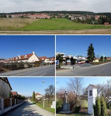

Brno-Útěchov
Brno-Útěchov je městská část na severním okraji statutárního města Brna.
e tvořena městskou čtvrtí Útěchov, původně samostatnou obcí,
která byla k Brnu připojena v roce 1980 jako dosud poslední obec.
Její katastrální území Útěchov u Brna má rozlohu 1,18 km² a žije zde 920 obyvatel
Jedná se o nejsevernější a nejvýše položenou část Brna,
střed vesnice se nachází v nadmořské výšce 465 m.
Svou rozlohou jde také o nejmenší městskou část Brna.

Video průvodce - youtube
Zpět
Ostatní stránky:
- Brno - Královo Pole
- Brno - Bosonohy
- Brno - Žebětín
- Brno - Chrlice
- Brno - Ivanovice
- Brno - Starý Lískovec
- Brno -Jundrov